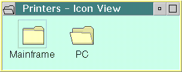
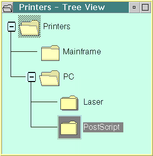
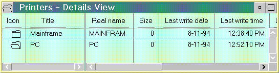

A Container view lists the components of an object. The components can be ordered or unordered in the view; the order of the information displayed in a contents view does not affect the meaning of the object containing the information. CUA guidelines describe three kinds of Container views:
An Icon view displays each object as an icon. Its purpose is to give the user an easy way to change the position of objects or to otherwise directly manipulate them.
An object usually is represented by only one icon. However, for some tasks, the user might find it convenient to represent an object with more than one icon. For example, the user might want a representation of a printer object in more than one place so that the user can have easy access to the printer from anywhere. The user can create an additional icon, known as a shadow, to represent the same printer object. The following figure shows an Icon view with objects:
The Tree view displays container objects arranged hierarchically.
The leftmost objects displayed in the Tree view are at the root level and are the same objects displayed in all the other Container views. Objects that contain other objects are called parent objects. The objects that a parent object contains are called child objects and can be displayed only in the Tree view. Child objects that contain other objects serve a dual role: they are the children of their parent object, but they are parent objects as well, with children of their own. For example, a parent object might be a book that contains individual child objects for its chapters or a folder that contains several reports. The chapters or reports, in turn, could be parent objects that contain their own children, such as the major sections of a chapter or report.
If the child objects of a parent object are not displayed, the parent object can be Expanded to display them as a new branch in the Tree view. Once a parent item has been expanded, it can be Collapsed to remove its child objects from the display. The following figure shows a Tree view with objects:
A Details view combines small icons with text that provides additional information about objects. The type of information displayed depends on the type of object and the type of tasks the user wants to perform. A Details view gives the user access to some of the object's more frequently used information, without requiring the user to open the object. Small icons are included in a Details view to provide a way for the user to easily recognize objects and to directly manipulate each object. Some Workplace Shell classes define a set of information that a user can display in a Details view of all instances of objects belonging to the class. The following figure shows a Details view with objects: